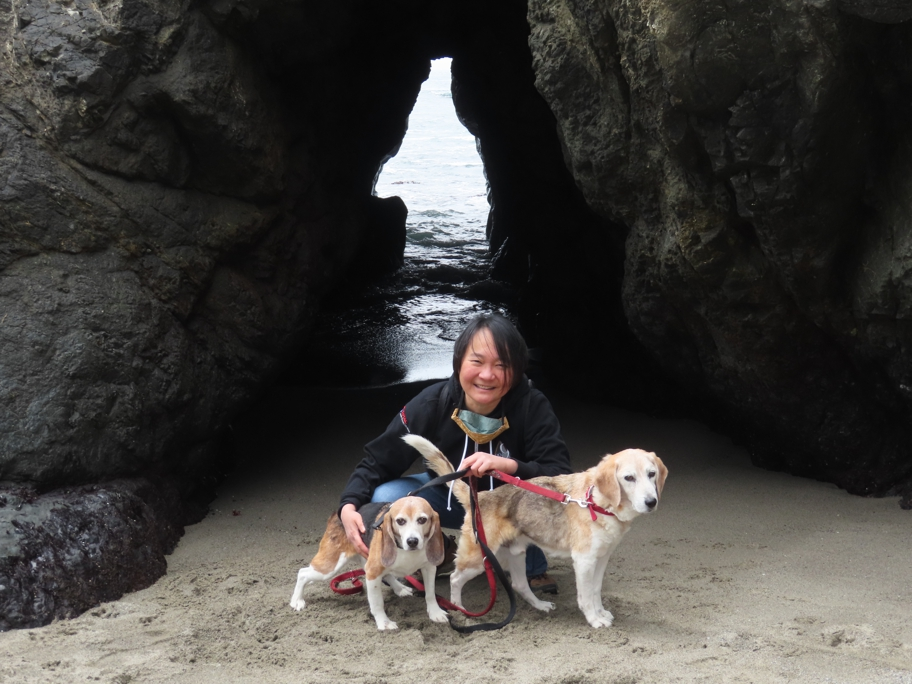

For the first time in many years of visiting Anderson Valley, we took the dogs to the Navarro River Redwoods State Park. It's one of the few state parks and such around here where dogs are allowed. The river mouth was blocked by a wide sandbar, which forms every year after the rainy season ends and the river slackens. At the north end is this little sea cave.
We visited a different part of the same park again two days later to walk in the redwoods.
Huxley Beagle Wallace Beagle